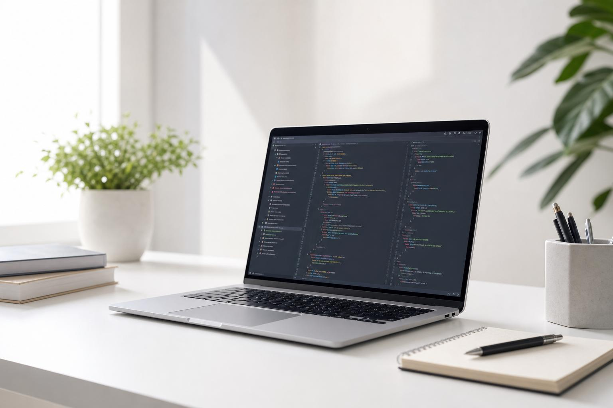

Personal Software Process
PSP ayuda a los ingenieros a planificar, medir y mejorar su trabajo individual, controlando tiempos, defectos y calidad.

Procesos que permiten mejorar la calidad, productividad y organización del desarrollo de software.
PSP fortalece el trabajo individual del ingeniero, mientras que TSP promueve la colaboración y el rendimiento de los equipos de desarrollo.


PSP ayuda a los ingenieros a planificar, medir y mejorar su trabajo individual, controlando tiempos, defectos y calidad.
TSP organiza el trabajo colaborativo mediante roles, responsabilidades y planes para desarrollar software de calidad.
Ambos procesos buscan reducir errores, optimizar recursos, mejorar el rendimiento y entregar productos de software de calidad.

Dirige al equipo, coordina actividades, controla avances y realiza reportes.
Organización del equipoPlanifican actividades, orientan el desarrollo, administran la calidad y gestionan los requerimientos.
Responsabilidades TSPTiene una duración de 64 horas distribuidas en 10 días. Su objetivo es fortalecer las habilidades individuales en ingeniería de software.
Inversión: $23.916 MXNTiene una duración de 64 horas distribuidas en 10 días. Evalúa la correcta aplicación del proceso en equipos de desarrollo.
Inversión: $263.916 MXNProfesionales de TI, servidores públicos, docentes universitarios y estudiantes de ingeniería de sistemas o software desde sexto semestre.
Formación en desarrollo de software